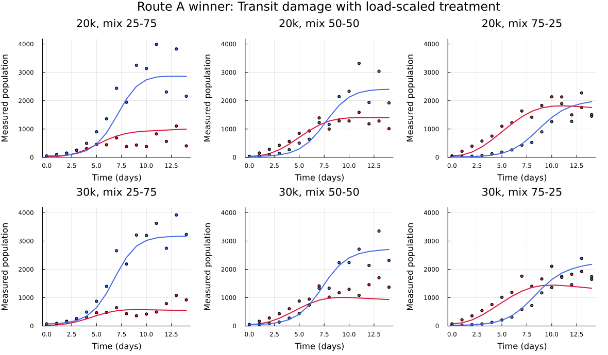
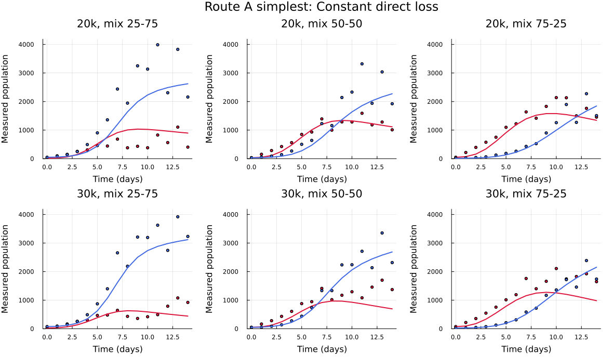
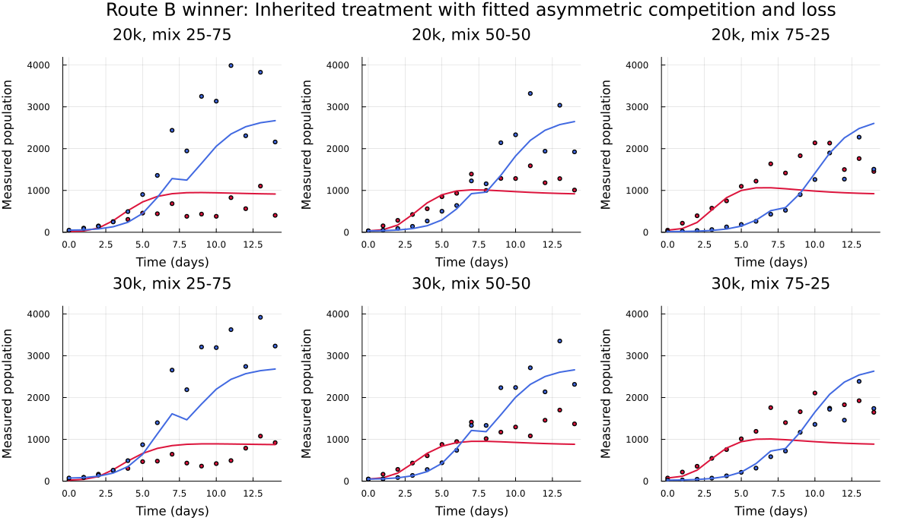

Reduced-stage treated coculture comparison
Can treated coculture be explained without fitting the treated-monoculture stage first? This report compares two conditional inheritance routes on exactly the same 168 treated-coculture observations.
What was compared
Route A: Stage 1 → Stage 3 → Stage 4
Stage 1 growth and the untreated Stage 3 asymmetric competition-with-loss parameters are fixed. Treatment parameters are estimated only from treated coculture. Stage 2 is not used.
Route B: Stage 1 → Stage 2 → Stage 4
Stage 1 growth and Stage 2 timing/Hill treatment parameters are fixed. Stage 3 is not inherited; coculture competition or context terms are estimated directly from treated coculture.
Matched conditional BIC
BIC is calculated as \(n\log(\mathrm{SSE}_{scaled}/n)+k\log n\), with n = 168 in every row. The scaled SSE divides each residual by that trajectory's observed peak before summing. Only parameters estimated in this conditional treated-coculture fit count toward k; inherited parameters are fixed. Lower BIC is better, and Delta BIC is measured from the best row.
| Rank | Route | Model | Pooling | Free_parameters | BIC | Delta_BIC | Boundary_flag |
|---|---|---|---|---|---|---|---|
| 1 | Stage 1 - Stage 3 - Stage 4 | Transit damage with load-scaled treatment | partial_5pct | 8 | -591.03 | 0.0 | true |
| 2 | Stage 1 - Stage 3 - Stage 4 | Time-decaying direct loss | partial_5pct | 4 | -572.07 | 18.96 | true |
| 3 | Stage 1 - Stage 3 - Stage 4 | Transit damage with load-scaled treatment | shared | 7 | -563.86 | 27.17 | true |
| 4 | Stage 1 - Stage 3 - Stage 4 | Constant direct loss | partial_5pct | 3 | -563.85 | 27.18 | true |
| 15 | Stage 1 - Stage 2 - Stage 4 | Inherited treatment with fitted asymmetric competition and loss | shared | 4 | -488.08 | 102.95 | true |
| 16 | Stage 1 - Stage 2 - Stage 4 | Inherited treatment with coculture amplitude scaling | shared | 2 | -468.45 | 122.59 | false |
| 17 | Stage 1 - Stage 2 - Stage 4 | Inherited treatment with fitted asymmetric competition | shared | 2 | -457.38 | 133.65 | false |
Competition-first fits
Selected model
The selected transit model allows treatment-driven movement into a damaged-but-visible compartment, clearance of that compartment, and load-dependent treatment scaling.

Selected Route A parameters
| parameter | estimate |
|---|---|
| kill_sensitive | 0.59634 |
| kill_resistant | 2.4046e-8 |
| lambda | 0.44645 |
| onset | 6.5503e-13 |
| clearance | 0.48605 |
| beta_sensitive | -3.0 |
| beta_resistant | -3.0 |
| log_contrast_density | -0.04879 |
Simplest benchmark

Simplest Route A parameters
| parameter | estimate |
|---|---|
| kill_sensitive | 0.18642 |
| kill_resistant | 1.2398e-10 |
Treatment-first reciprocal fit

Selected Route B parameters
| parameter | estimate |
|---|---|
| alpha_NC | 3.4242e-7 |
| alpha_CN | 0.66937 |
| death_naive | 0.19509 |
| death_cis | 3.1573e-8 |
Route B multistart stability
| parameter | value_mean | value_sd | near_optimization_bound | stability_class |
|---|---|---|---|---|
| alpha_CN | 0.8965020855752801 | 0.3940194103716313 | false | moderate |
| alpha_NC | 1.3333348719753737 | 2.3093997440901513 | true | broad |
| death_cis | 0.02950335916330475 | 0.05110114725132639 | true | tight |
| death_naive | 0.13014311414061647 | 0.11270730790710456 | true | moderate |
Interpretation
The treated-coculture trajectories retain information that is better captured when untreated coculture competition is established first and treatment is then added. Simply inheriting treated-monoculture response and estimating competition from treated coculture loses substantial support. This does not prove the eight-parameter transit mechanism is biologically correct: its winning fit is boundary-limited, including a cis loss estimate near zero and load-scaling terms at bounds.
Audit trail
The reciprocal fits call GrowthParameterEstimation.run_joint_multistart; the competition-first artifacts were produced with profile_joint_fit_bounds and run_joint_fit. Both reject non-finite fits and failure sentinels, retain raw and scaled SSE, use fixed day-zero anchors, and write parameter/stability artifacts.
Complete conditional ranking
| rank | route | model | pooling_mode | bic | delta_bic | n_parameters | boundary_issue |
|---|---|---|---|---|---|---|---|
| 1 | Stage 1 -> Stage 3 -> Stage 4 | dual_transit_load_scaled | partial_5pct | -591.031803944551 | 0.0 | 8 | true |
| 2 | Stage 1 -> Stage 3 -> Stage 4 | dual_time_decay_kill | partial_5pct | -572.0712285389752 | 18.96057540557581 | 4 | true |
| 3 | Stage 1 -> Stage 3 -> Stage 4 | dual_transit_load_scaled | shared | -563.8585796883903 | 27.17322425616078 | 7 | true |
| 4 | Stage 1 -> Stage 3 -> Stage 4 | dual_constant_kill | partial_5pct | -563.8534993151999 | 27.178304629351146 | 3 | true |
| 5 | Stage 1 -> Stage 3 -> Stage 4 | dual_time_decay_kill | shared | -559.4895384205089 | 31.542265524042136 | 3 | true |
| 6 | Stage 1 -> Stage 3 -> Stage 4 | dual_constant_kill | shared | -554.8495235045251 | 36.18228044002592 | 2 | true |
| 7 | Stage 1 -> Stage 3 -> Stage 4 | dual_transit_damage | partial_5pct | -554.7811491099641 | 36.25065483458695 | 6 | true |
| 8 | Stage 1 -> Stage 3 -> Stage 4 | dual_transit_competitor_scaled | partial_5pct | -554.7423730967537 | 36.28943084779735 | 8 | true |
| 9 | Stage 1 -> Stage 3 -> Stage 4 | sensitive_tolerant_transition | partial_5pct | -554.4945006252609 | 36.53730331929012 | 7 | true |
| 10 | Stage 1 -> Stage 3 -> Stage 4 | dual_delayed_ramp_kill | partial_5pct | -552.8505819357526 | 38.181222008798386 | 5 | true |
| 11 | Stage 1 -> Stage 3 -> Stage 4 | sensitive_tolerant_transition | shared | -551.7108075604007 | 39.32099638415036 | 6 | true |
| 12 | Stage 1 -> Stage 3 -> Stage 4 | dual_delayed_ramp_kill | shared | -544.0263568154214 | 47.00544712912961 | 4 | true |
| 13 | Stage 1 -> Stage 3 -> Stage 4 | dual_transit_competitor_scaled | shared | -543.0195731324824 | 48.01223081206865 | 7 | true |
| 14 | Stage 1 -> Stage 3 -> Stage 4 | dual_transit_damage | shared | -542.6568464217752 | 48.374957522775844 | 5 | true |
| 15 | Stage 1 -> Stage 2 -> Stage 4 | stage2_plus_asymmetric_competition_death | shared | -488.07828671167204 | 102.953517232879 | 4 | true |
| 16 | Stage 1 -> Stage 2 -> Stage 4 | stage2_direct_context_scaling | shared | -468.4459921872375 | 122.58581175731354 | 2 | false |
| 17 | Stage 1 -> Stage 2 -> Stage 4 | stage2_plus_asymmetric_competition | shared | -457.3805779251483 | 133.6512260194027 | 2 | false |